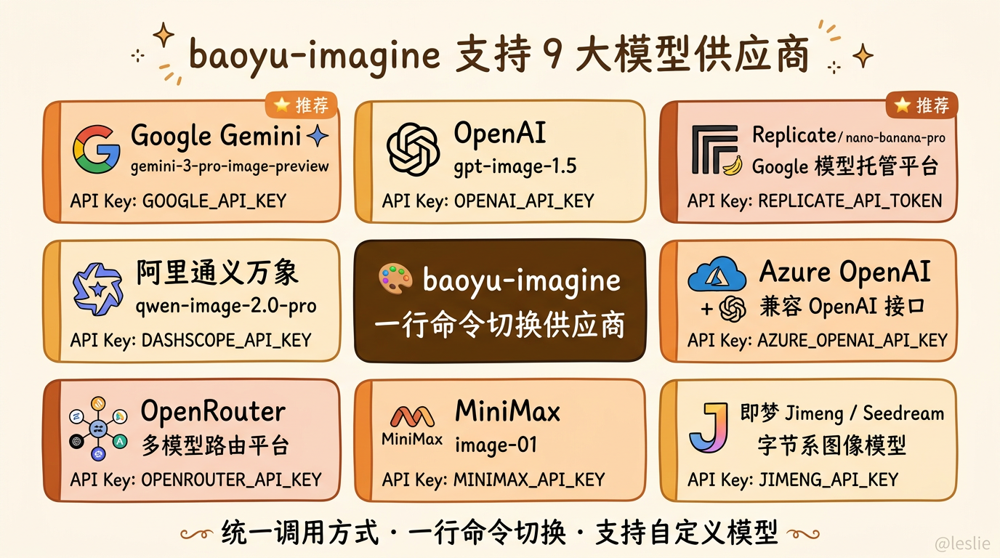
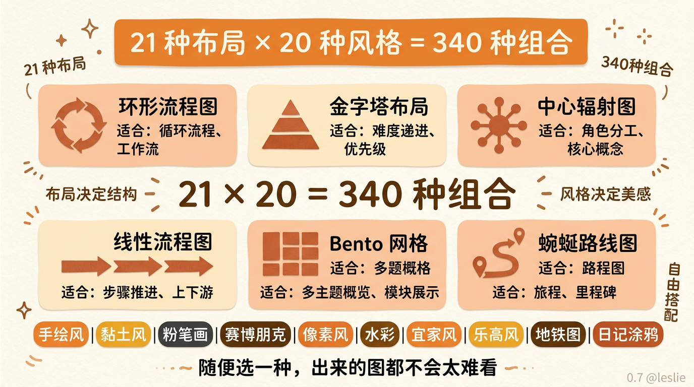
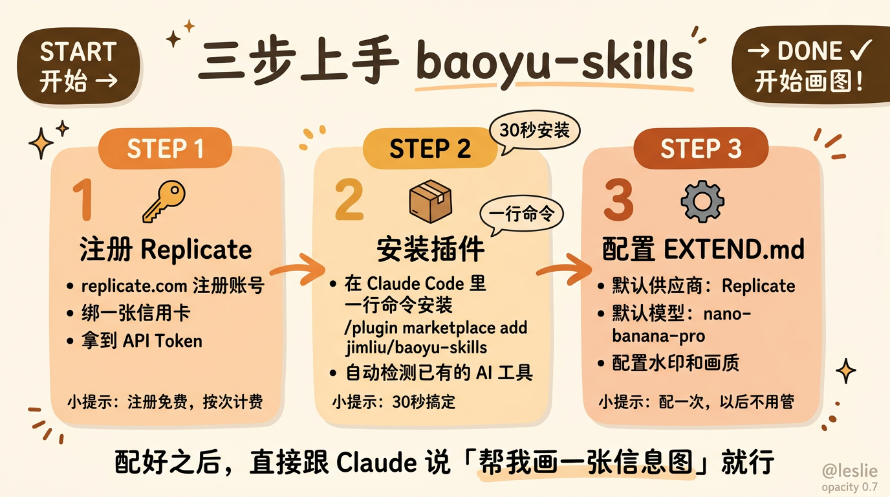

我文章里那些好看的信息图，都是这一个免费工具画的
最近有朋友问我，你文章里那些信息图是怎么画的，配色统一风格统一，看着像一个人做的。
我当时回了一句，确实是一个「人」做的，只不过这个人是 AI。
然后对方来了兴趣，追问用的什么工具。我想了想，觉得这个东西可能不止他一个人好奇，干脆写篇文章聊聊。
先说个背景。
我写文章有个习惯，每篇都会配信息图。不是随便找张网图凑数的那种，是根据文章内容专门做的。环形流程图、金字塔对比、中心辐射图、管线流程图，根据内容的结构来选合适的布局。
之前推荐 gstack 的那篇，5 张信息图。推荐 Skills 的那篇，好几张。还有其他几篇文章，加起来前前后后画了几十张了。
坦率的讲，这个量级如果是人工做，要么得请一个设计师，要么得花大量时间自己学设计软件。我一个写代码的，让我用 Figma 画信息图，画出来大概长这样，文字挤在一起，配色辣眼睛，排版全靠缘分。
但我用 AI 来画，画出来的效果你们也看到了。风格统一，配色舒服，信息层次清晰。
关键不是我有什么隐藏天赋。关键是工具选对了。
我用的这个工具叫 baoyu-skills。
它是一个开源的 Claude Code Skills 插件集，作者叫 Jim Liu，GitHub 上能找到。里面有好几个 Skill，跟画图相关的有三个，baoyu-imagine、baoyu-infographic、baoyu-cover-image。我重点聊聊前两个。
baoyu-imagine 是底层图像生成引擎。它支持 9 个模型供应商，Google、OpenAI、Replicate、阿里通义万象、MiniMax、即梦、Seedream、Azure、OpenRouter 都能用。

你可能会说，支持这么多供应商有什么了不起的，Midjourney 不是更好用吗。
不一样。
Midjourney 是好用，但它是一个封闭的产品。你只能在它的界面里用，不能接入你自己的工作流。而 baoyu-imagine 是一个 API 层的抽象，你可以把它嵌入到任何自动化流程里。
更重要的是，它解决了一个特别实际的问题。
你用 Google 的 Gemini 画图，得调 Google 的 API。换成 OpenAI，得换 SDK。换成国内模型，又是另一套接口。每个模型的调用方式、参数格式、返回结构全都不一样。你想对比三个模型的效果，得写三套代码。
baoyu-imagine 把这些都统一了。一行命令，改一个 --provider 参数，其他全都不用动。prompt 格式一样，输出路径一样，质量控制一样。你甚至可以用配置文件把默认供应商和模型锁死，以后每次生成都不用指定。
这个看起来好像不是什么大事。但你真的用过 3 个以上的模型供应商之后就会知道，统一调用方式这件事有多么省心。
我目前用的是 Replicate 上的 nano-banana 模型，全名 google/nano-banana-pro。
为什么选它，三个原因。
稳，快，便宜。
稳是第一位。nano-banana 对 prompt 的遵从度特别高。你让它用暖橙色调，它就用暖橙色调。你让它做手绘风，它就老老实实做手绘风。不会自作主张给你加什么彩虹渐变或者 3D 效果。
这个太重要了。
我之前用过几个模型，最大痛点就是「不稳定」。同一套 prompt，第一次出来好看，第二次出来就变了味。你花半小时调出一个满意的版本，但你不知道怎么复现它。下一次生成又是一场赌博。
nano-banana 不这样。同样的 prompt，出图风格高度一致。你可以建立一套自己的视觉语言，持续复用。
快是第二位。一般一张信息图 10 到 15 秒就出来了。我之前用某些模型有时候要等 30 秒甚至一分钟，画多了真的很烦。
便宜是第三位。Replicate 按次计费，一张图几分钱人民币。我画了几十张图，总共花了不到一顿外卖的钱。
而且 nano-banana 对中文的支持也挺好。信息图上的中文文字基本不会出现乱码或者奇怪的方块字。这个对中文内容创作者来说太关键了，很多模型画中文一塌糊涂。
说完底层引擎，再说说真正让我觉得牛逼的上层工具。
baoyu-infographic。
这个是我用得最多的 Skill，我文章里那些信息图基本都是它画的。
它做的事情用一句话概括就是，把任何内容变成一张好看的信息图。
21 种布局，20 种风格，自由组合。
你要做环形流程图展示一个循环过程，选 circular-flow。你要做金字塔展示难度递进，选 hierarchical-layers。你要做中心辐射展示角色分工，选 hub-spoke。你要做管线流程展示上下游衔接，选 linear-progression。还有 Bento 网格、冰山图、漏斗图、地铁线路图、宜家说明书风、乐高积木风，什么都有。
21 乘 20，340 种组合。

我跟你说，你随便选一种，出来的图都不会太难看。不是可能不难看，是不会。
为什么，因为每种布局和风格背后都有一套经过调优的 prompt 模板。
它的工作流程是这样的。你给它内容，它先做结构化分析，把你的文字拆成适合视觉表达的格式。然后根据你选的布局和风格，套用对应的 prompt 模板，生成最终的生成指令。最后调用图像生成模型出图。
整个过程中，你不需要描述图长什么样。你只需要告诉它你的内容是什么。
你想想看，我们平时用 AI 画图最大的问题是什么。不是 AI 画不出来，是你不知道怎么描述你想要的图。你脑子里有一张图的感觉，但你说不清楚。你写了半天 prompt，AI 理解的是另一个意思。
baoyu-infographic 绕过了这个问题。它不是让你描述图，而是让你描述内容。内容到图的转化，它帮你做了。
而且它有个很贴心的设计，就是 prompt 文件。每次生成的时候，它会把完整的 prompt 保存下来。你觉得哪次出图效果特别好，直接拿那个 prompt 文件复用就行。改改内容，风格和布局不用动。
我现在已经攒了一套自己的 prompt 模板库了。暖橙色调手绘风、金字塔布局、环形流程图、中心辐射图，每种布局配一种风格，调好了一次，以后直接套用。
这也是为什么你们看到我文章里的图风格那么统一。不是我每次都从零开始调，是我有模板了。同一套色板，同一套布局风格，改内容不改框架。出来的图自然就统一了。
还有一个小细节我觉得很加分。baoyu-infographic 支持水印。你在配置文件里设一下水印内容和位置，以后每张图都会自动加上。我自己的设置是右下角 @leslie，透明度 0.7。不起眼但你知道那是我的图。
说到这里可能有人会问，那 baoyu-cover-image 呢，你刚才也提到了。
baoyu-cover-image 是专门做文章封面图的。它有一个五维度的风格系统，类型、色板、渲染方式、文字层级、情绪强度，排列组合几百种。你把文章丢给它，它自动分析内容推荐风格。加个 --quick 参数全自动选择，你什么都不用管。
我个人用得不如 infographic 多，因为我的封面图风格比较固定。但如果你需要各种不同风格的封面图，这个工具能帮你省很多时间。
怎么上手呢。
三步。
第一步，去 Replicate 注册一个账号，拿到 API Token。Replicate 注册是免费的，绑一张信用卡就行，按次计费，没有最低消费。
第二步，安装 baoyu-skills。一行命令，在 Claude Code 里装就行。
第三步，配置 EXTEND.md。把默认供应商设成 Replicate，默认模型设成 nano-banana-pro，再配一下你喜欢的水印。以后每次生成都不用再指定这些参数。

三步搞定。之后你在 Claude Code 里直接说，帮我画一张什么什么信息图，它就用你配好的模型和风格来生成。
你也可以把我这篇文章里提到的那些风格搭配拿去试。暖橙色调手绘风配圆形流程图，金字塔布局配难度递进，中心辐射配角色分工。这些搭配我都验证过了，出图效果稳定。
说到这里，我想多说几句。
其实这些信息图不只用来配文章。我最近发现它更大的价值是在工作汇报和方案设计里。
你想想看，你平时写方案做汇报，最头疼的是什么。不是内容写不出来，内容你脑子里有。最头疼的是怎么把一个复杂的架构、一个多步骤的流程、一个多层级的优先级，用一张图让领导或者客户一眼看懂。
你自己画吧，PowerPoint 里那点形状工具，拉个流程图都费劲，更别说画好看了。找设计师吧，沟通成本高，等你描述清楚你想要什么，设计师已经改了三版了，每版都不对。
但用 baoyu-infographic，你把方案的结构化内容丢给它，选一个匹配的布局，10 秒出图。
你要汇报一个技术架构迁移方案，用 structural-breakdown 布局，把新旧架构的组件拆解得清清楚楚。你要展示一个项目推进计划，用 winding-roadmap，里程碑和时间线一目了然。你要对比两个方案的优劣，用 binary-comparison，并排展示，差别一眼就看得出来。
我跟你说，我最近几次方案评审，配图全是这么画的。别人还在用黑白文字+箭头凑合画流程图的时候，你甩出一张配色统一、层次清晰、手绘风格的信息图，那个视觉冲击力完全不在一个量级。
而且因为出图快，你可以在会议前一天晚上，把方案里的每个关键环节都配一张图。不用花几个小时，十几分钟搞定。第二天开会的时候，PPT 里每一页都有一张专业的可视化配图。
说真的，这个效率提升不是线性的，是数量级的。
以前做一份汇报级别的方案，光配图就要花半天到一天。现在十几分钟。省下来的时间你可以用来打磨内容本身，想清楚逻辑，把论据夯实。而不是在 Figma 里对齐框框。
baoyu-skills 里还有一个叫 baoyu-slide-deck 的 Skill，专门做演示文稿的。不过那个我还在摸索，等我跑通了再单独写一篇，聊聊怎么用 AI 从零产出一份汇报级别的 PPT。
感兴趣的话可以先关注着。
说到最后，我想聊一个感受。
我之前对 AI 画图这件事一直有个执念，就是觉得 AI 画图不稳定。同样的 prompt 出来不一样的东西，你没法建立一个持续的视觉风格。这对做内容的人来说是致命的，因为风格不统一，读者对你的品牌感知就是模糊的。
baoyu-skills 加 nano-banana 解决了这个问题。它让 AI 画图从一门玄学变成了一门工程。标准的输入格式，稳定的模型输出，可复现的配置。今天画出来好看的图，明天同样的 prompt 还能画出一样好看的图。
这个稳定性才是核心。
AI 时代做内容，工具不是瓶颈，工具会越来越多越来越好。审美也不是纯粹的瓶颈，因为像 baoyu-infographic 这样的工具已经帮你把审美的下限兜住了。20 种风格你随便选一种都不会太丑。
真正的瓶颈是判断力。
是你能不能在 340 种布局和风格的组合里，选出最适合你内容的那一种。是你能不能在一堆出图方案里，挑出那个最好看的配色。是你能不能建立一套自己的视觉语言，然后持续用它。
工具决定下限，品味决定上限。
baoyu-skills 是我目前找到的，把 AI 画图下限拉得最高的工具。开源，免费，支持多个模型，配置灵活。如果你也在为 AI 画图不稳定而头疼，试试看。
风格展示：


Jim Liu 在 GitHub 上维护这个项目，持续在更新。如果你觉得好用，去给他一个 Star。
以上，既然看到这里了，如果觉得不错，随手点个赞、在看、转发三连吧，如果想第一时间收到推送，也可以给我个星标⭐～
谢谢你看我的文章，我们，下次再见。